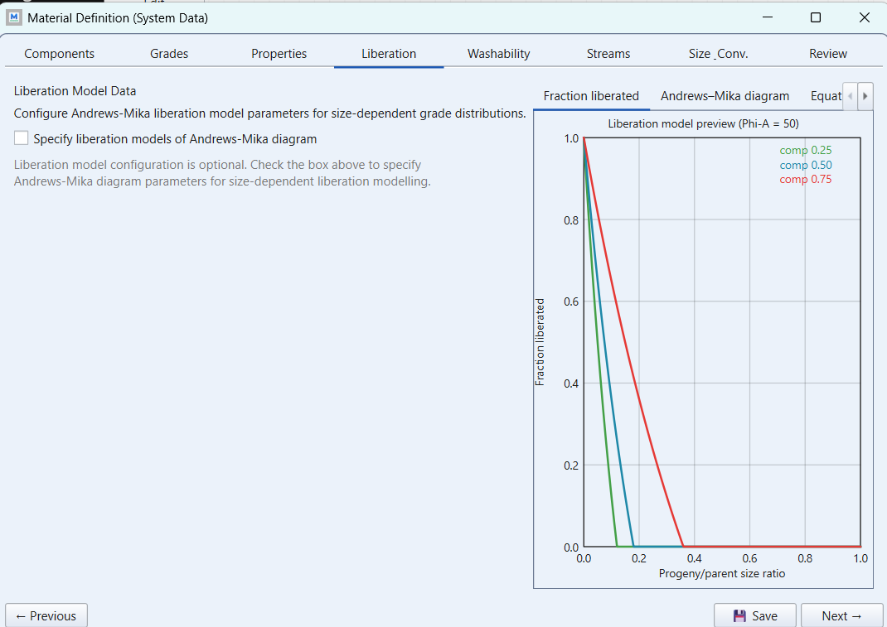
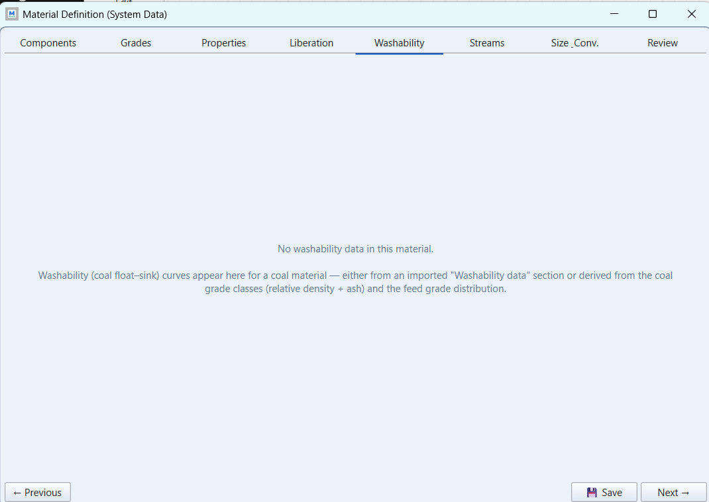
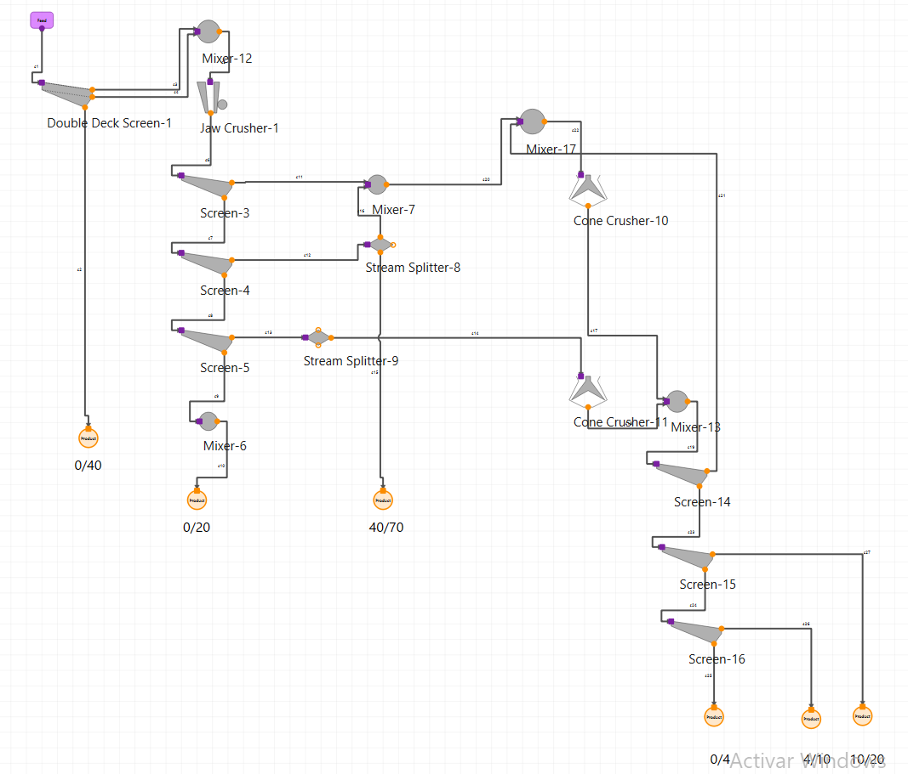
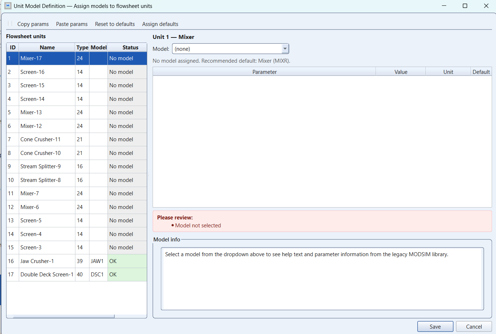
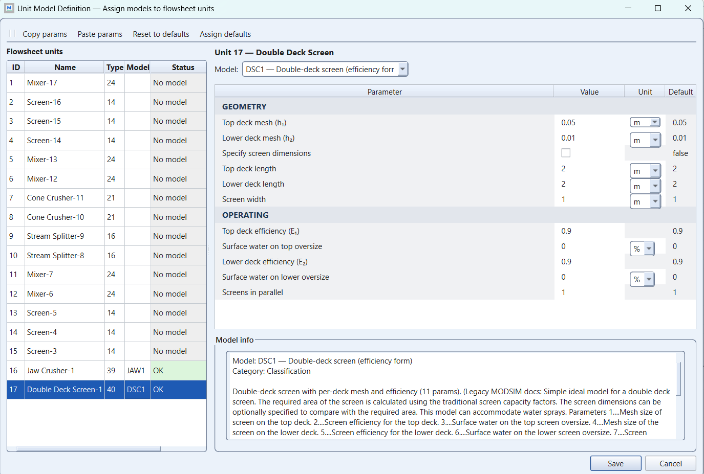
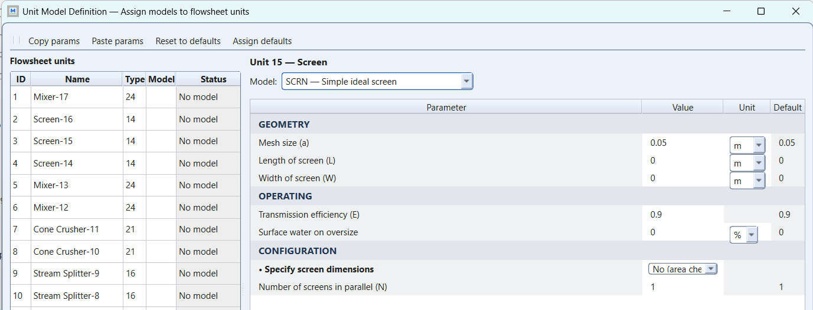
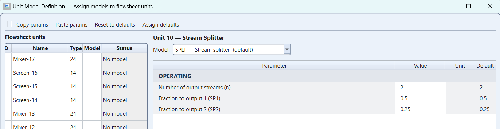
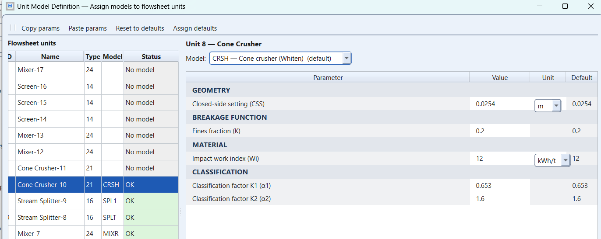

Assignment 1, step by step: the crusher station
module 2 · King 5.1-5.6, Tables 5.3-5.7
Read in King: King 5.1–5.6 · Fracture of brittle materials · p. 119King 5.3–5.7 · Breakage probability and particle fracture energy · p. 124
On this page
What they ask
The sheet is Assignment_1.pdf, a two-page document written by Bertil Pålsson and dated 2013-10-10. In its own words, its purpose is to train the building and simulation of a crusher station for dry products. The work comes in three parts. First you build your own circuit, then you simulate it with simple models, and finally you simulate it again with advanced models. The task is described below point by point, in the same order as the sheet.
1. The reference plant (section 2). The sheet starts from case5, an example that comes with USIM PAC, which is another process simulator. It is an aggregate plant, in other words a plant that makes gravel and sand for construction. It has two impact crushers, which break the rock by striking it at high speed, one autogenous crusher and a set of screens. The autogenous crusher is a VSI, a vertical shaft impactor, which breaks the rock mainly against other rock. You only need the part of the plant that makes the sized products 0-40, 0-20 and 40-70 mm, the intermediate fractions 10-20 and 4-10 mm, and the rest fraction 0-4 mm. A name such as 0-40 means all the material between 0 and 40 mm. The figure on page 1 shows the whole flowsheet, which is the drawing of all the units and of the streams that connect them. Its streams are numbered from 1 to 40, and its units carry circled numbers. In that figure the two impact crushers are the units labelled Primary Crusher ④ and Secondary Crusher ⑭, and the autogenous crusher is the Barmac ⑩, Barmac being the brand name of that VSI.
2. The material (section 3.1). The sheet fixes the material completely, with the values in this table.
| Given | Value |
|---|---|
| Size fractions in the model | 20 |
| Largest particle | 600 mm |
| Feed distribution | RRS with mm and (lambda) |
| Moisture | 2 % |
| Feed rate | 300 t/h |
The size fractions are the size classes that the simulator uses to describe the material, and the largest particle sets the top of that size range. RRS stands for the Rosin-Rammler-Sperling distribution, a curve with two parameters that is often used for broken rock. Its size parameter is the size that 63.2 % of the material passes, and its slope , which the sheet calls lambda, sets how widely the sizes are spread. The moisture is the water that travels with the solids, as a share of the feed.
3. The flowsheet simplifications (section 3.2). The sheet makes five simplifications, and all five are mandatory.
- a) Screens ① and ② become one double-deck screen, which is a single machine with two screening surfaces (decks), one above the other.
- b) Process streams 10 and 21 are removed.
- c) Process stream 31 gives the 0-4 mm fraction directly.
- d) The two impact crushers and the VSI are replaced by crushers that you select.
- e) Splitter ⑧ is adjustable, with 50 % as the default, and the other splitter works the same way. A splitter is a unit that divides one stream into two streams in a chosen proportion.
4. Anything else (section 3.3). You may make any other assumptions and simplifications you need, as long as you say which ones you made.
5. Simple models (section 4). Run a simulation that produces the wanted fractions without overloading crushers or screens. Then present three things. The first is a flowsheet with flyouts, which are the small tables of numbers that MODSIM, the simulator used in this course, draws next to a stream. The second is the particle size distributions of the products, and of any other stream you consider essential, where a particle size distribution is the curve that shows how much of the material passes each size. The third is condensed machine data for every unit, which means a short table with the main figures of each machine.
6. Advanced models (section 5). Before you change anything, give the circuit a new name and save it under that name. Then switch the screens to the Karra model, a screen model that calculates the separation from the real size of the screen deck and the load on it, and make sure that no screen is larger than 3 × 6 m. Replace the crusher models with more advanced ones as well. The crusher sizes come from the tables in King chapter 5, the crushing chapter of R. P. King's textbook Modeling and Simulation of Mineral Processing Systems. For each machine, check that it can take its feed, and that its setting (the gap that controls how coarse its product is), its capacity and its power are realistic and within the manufacturer's recommendation. Finally, run the circuit again and compare the result with the simple-model result.
How the work flows
Because the sheet reads like a list of settings, it is natural to misread it as a recipe. In that reading you define the material, press Run and save the report, and then you swap a few machines and compare. That is not the job. The assignment is a design loop, run twice, and the report is the record of that loop. Four kinds of things play different roles in the loop, and keeping them apart is most of the work.
- What stays fixed for every run. The material of section 3.1, the topology and the six products never change. The topology is the way the units are connected, which here means case5 with the five simplifications. If any of these three things changes between two runs, the two runs can no longer be compared.
- What you choose once, before the first run. You choose the type of crusher for each of the three crusher places. Where case5 has its primary impact crusher, you put a jaw crusher, which squeezes the rock between a fixed plate and a moving plate, or a gyratory crusher, which squeezes it between a gyrating cone and a fixed bowl. Where case5 has the secondary impact crusher and the Barmac, you put cone crushers, which work like small gyratories and are used for finer crushing. This choice is sheet item 3.2 d.
- What you turn in part 4. In part 4 you change what the simple models let you change, which is the crusher settings, the aperture of each screen deck and the two splitter percentages. A crusher's setting is the gap that decides how coarse its product is. For the primary you set the open-side setting (OSS), which is the gap at the bottom of the crusher when it is at its widest, and for the cones you set the closed-side setting (CSS), which is the same gap at its narrowest. The aperture of a deck is the size of its openings. You change one thing, run, read the result, and only then change the next thing.
- What changes in part 5. In part 5 the models change, but the circuit does not. The screens become Karra screens, which need a real deck size, and the crushers get cycle models, which need a real machine size from King's tables. A cycle model follows the rock through repeated rounds of classification and breakage, in which the pieces too large to leave are broken and their fragments are classified again. The settings and apertures stay as they were in part 4 unless a machine limit forces a change, and if that happens you say so in the report.
To use the sheet's own words, "select" happens twice. In part 4 you select the crusher types, and in part 5 you select the machine sizes. "Evaluate" also happens twice. In part 4 you evaluate whether the circuit makes the six fractions without overloading anything, and in part 5 you evaluate whether the machines are realistic and inside the manufacturer's tables. The comparison of the two parts, explained in process terms, is the discussion that the rubric, the grading grid of the assignment, pays for.
For each kind of run, the table shows what you change, what you read and when you stop.
| Run | What you change | What you read | When to stop |
|---|---|---|---|
| First run, part 4 | Nothing yet. You run the topology of your sketch with first-guess settings and 50 % on both splitters | That it runs without Review errors (the Review is MODSIM's check of the inputs), that every product stream carries tonnage, and that the feed passes the three RRS checks of step 3 | As soon as it runs, because this is the starting point and not a result |
| Tuning runs, part 4 | One change per run, which is a setting, a deck aperture or a splitter percentage. Save each variation as its own copy of the project, with the change in the file name, so that every run stays as evidence you can reopen | The six product tonnages and where their size limits fall, and the tonnage into each crusher and onto each deck | When the six fractions are right and no unit carries more than a real machine of that type can take (see below) |
| Advanced run, part 5 | The models and the machine sizes. A setting or an aperture changes only when a table forces it, and then you say so | Karra's area utilisation for each deck, which tells how fully the deck's area is used, and each crusher's tonnage, feed size and power against the King row for its setting | When every deck is at most 3 × 6 m with a sensible utilisation and every crusher sits inside its table row |
| Comparison | Nothing | One table of part 4 against part 5, for each product and each unit | When every difference has an explanation in process terms |
How to check overloading
The sheet says "without overloading crushers and screens", but it does not say how to tell. The simple models cannot tell you either. An ideal screen, which is a screen model with an aperture but no area, passes whatever you feed it, and CRS1, the simple cone crusher model, crushes any tonnage you send it. In part 4 the check is therefore yours to make by hand, and how you made it belongs in the assumption list (sheet 3.3, rubric criterion 1). If the tables still look like a wall of numbers, the page Reading a machine table, step by step walks through them one column at a time and draws out three example readings.
- Crushers. From the fly-out of each crusher, take the tonnage and the top size of its feed, where the top size is the size of the largest pieces. Then open the King table for that type of machine. Table 5.4 is for jaws and Table 5.5 for gyratories, both read by open-side setting, Table 5.6 is for standard cones, read by closed-side setting, and Table 5.7 is for short-head cones, the variant built for fine, tertiary crushing. The same tables are on Canvas, the course's learning platform, as Tables5.4-5.7.pdf, and they are easier to read on pages 152 to 155 of the King e-book. Ask three questions, always in this order. The first question is whether the machine swallows the feed. King's rule (section 5.6.1) is that for jaws and gyratories the largest lump should be at most about 80 % of the gape, which is the width of the opening at the top of the crusher, and that for cones the closed-side feed opening should be larger than the largest lump. The second question is whether the machine allows your setting. It does when its row has a number in the column of your setting, and for cones the setting must also respect the recommended minimum CSS. The third question is whether the machine takes your tonnage. To answer it, go down the column of your setting to the first row whose capacity covers the tonnage in the fly-out. That row is the machine, and it also gives you the motor power. If no row at your setting reaches your tonnage, the crusher is overloaded. You can then open the setting, send the crusher less material (which is what the splitters are for), or plan two identical machines in parallel behind a splitter.
- The reduction ratio, which is the first thing an opposing group asks about. Every crusher sheet prints two lines, "80% passing size in feed is …" and "80% passing size in product is …". The 80 % passing size, written , is the size that 80 % of the material passes. The first size divided by the second is the reduction ratio, , which says how many times smaller the crusher makes the rock. The same two numbers are the fly-outs of the stream entering the crusher and of the stream leaving it. King gives the customary ranges on pages 144 and 146, which are 4 to 9 for jaws, 3 to 10 for gyratories, 6 to 8 for secondary cones and 4 to 6 for tertiary cones. A ratio below the range means that the machine passes much of its feed unbroken. The sheet says the same thing in another line, "fall through material in feed", which is the share of the feed that is already finer than the setting. Before you touch the setting, look for the two usual causes. The first cause is the scalping cut of the sheet. Scalping means screening off the fine material before it reaches a crusher, and the sheet scalps at 40 mm, so everything between 40 mm and the open-side setting still reaches the primary and falls straight through it. The second cause is the table row. A 36 × 48 jaw, whose feed opening measures 36 by 48 inches, needs an OSS of 127 mm to take 260 t/h, and a wide OSS gives a low ratio. The ratio is a rule of practice and not the sheet's overload criterion, so write it in the machine table and explain it rather than chasing it blindly. Here is a worked case. A jaw at an OSS of 130 mm on a feed scalped at 40 mm gives a ratio of about 2.5, with a printed fall-through of 40 %. Closing it to 100 mm gives 3.2, but no jaw row in Table 5.4 takes the tonnage at that setting, and the only machine with margin is a 30 × 60 gyratory working at 45 % of its capacity. Either answer can be defended, and the only answer that cannot be defended is silence.
- A setting and a table row go together. Before you settle on a setting, check that a machine of the right size has a number in that column, because a blank cell means "not recommended". For example, at a closed-side setting of 16 mm the largest standard cone that Table 5.6 recommends is the 5½ ft fine, with 181 t/h, while at 19 mm the 7 ft fine appears with 381 t/h. A cone size such as 5½ ft is the diameter of the crushing head, and a word such as fine, medium or coarse names the cavity, which is the shape of the crushing chamber. A setting that tames the circuit but has no machine behind it is not a design.
- Which feed opening the table gives. The crusher sheet asks for the open-side feed opening ("must be at least X mm"). Table 5.7, for short heads, gives both the closed side and the open side, so compare the sheet's number with the open side. Table 5.6, for standard cones, gives only the closed side, which is smaller than the open side by the throw, the distance the head travels between its closed and open positions. Passing that comparison is therefore safe, and failing it by a little is not yet a reason to reject the machine.
- A worked reading for the primary. The primary receives the +40 mm of the double deck, which means everything coarser than 40 mm, roughly 250 t/h with lumps up to 600 mm. A gyratory therefore needs a gape of at least 600 / 0.8 = 750 mm, which is about 30 inches. The smallest gyratory of Table 5.5 is the 30 × 60 (150 kW), which gives 313 t/h at an OSS of 51 mm, 450 at 76, 567 at 102 and 760 at 140. It takes 250 t/h at any setting, so for this machine the choice of setting becomes a product-size decision that you can motivate. A jaw with the same gape, the 30 × 42 of Table 5.4 (75 kW), gives 227 t/h at an OSS of 127 mm and 272 at 152, so it only fits if you accept a coarse product. The larger 36 × 48 (93 kW) gives 300 t/h at an OSS of 127. A single sentence explaining why the jaw has to be bigger than the gyratory for the same duty is the kind of thing the seminar rewards. The tertiary cone of the Exercise 4 guide is read from Table 5.7 in the same way.
- Screens in part 4. An ideal screen has no area, so you have two options. You can assume a deck size and check the load per square metre with the screening slides of module 2 (
ScreenFormulas.pdf,Screens.xls), or you can state that screen loading is checked in part 5, where the model gives the number. Both options are legitimate, and the only thing that is not legitimate is saying nothing. - Part 5. Karra reports an area utilisation for each deck, and a value above 1 means that the deck is smaller than its load. The sheet caps each screen at 3 × 6 m, so the honest answers to an overloaded deck are two screens in parallel, a different split upstream, or reporting the overload as a finding. The cycle crushers take a real machine size, but MODSIM does not refuse an overload. The comparison with the table row is therefore still yours to make, and the seminar will ask for it.
Key points
The rubric on the Canvas assignment page has five criteria, each worth 5 points. They are problem definition and assumptions · flowsheet and material definition · model selection and parameters · simulation results · discussion and analysis. When you read the sheet against that grid, the following priorities appear.
- Select and evaluate, in that order, twice. In part 4 you select the crusher types and settings, and then you check the six fractions and the overloads. In part 5 you select the models and the machine sizes, and then you make the table check. A run that nobody evaluated is not a result, and a report that shows only the last run has thrown away the evidence of the loop.
- Assumptions are a deliverable, not a footnote. Section 3.3 invites you to make assumptions, and criterion 1 pays for stating what you assumed and why. That includes which crusher types you chose, which screen apertures you used, what "overloaded" means for you, what the splitters do, and what happens to the 20-40 mm that case5 sends towards the 0/20 product, which is the product named after its 0 to 20 mm range.
- The feed defines the job. With mm and , the RRS function says that only about 17 % of the feed is finer than 40 mm and only 1 % is finer than 4 mm. Nearly everything you sell therefore has to be made by the crushers rather than screened out of the feed. The size classes, the top size (0.6 m, not 0.01 m) and the moisture (98 % solids) must be entered correctly, because otherwise every later number is wrong.
- Simple models are the baseline, not the answer. The ideal screens (SCRN and DSC1) only need an aperture and a transmission efficiency, which is the share of the fine material that really passes the deck. The simple crushers (JAW1, GYRA and CRS1) only need a setting, from which they produce a standard product curve. With these models you can find a circuit that makes the six fractions. Keep that run, because part 5 is compared against it, and "How the work flows" above says what may change between the two.
- The advanced round is where grades 4 and 5 are earned. The Karra screens (SCR2 and DSC2) need real deck dimensions, which is where the 3 × 6 m limit starts to bite. The cycle-model crushers (CRSH and SHHD) need real machine sizes from King's Tables 5.4 to 5.7, checked against capacity and power at the chosen setting. The comparison, explained in process terms, is the discussion that the rubric rewards, and it covers why the Karra screens misplace material, why the cone's product is coarser or finer, and where the power went.
- "Condensed machine data" is one table. It has one row per unit with the model code, the setting (OSS or CSS for a crusher, the aperture for a screen), the size, the feed tonnage, the reduction ratio for the crushers, the power, and the area utilisation for the screens. Decide early who fills it in and from which MODSIM report.
- The seminar is part of the grade. The opposing group will question every machine choice, so two people should be able to defend each one with a number, such as a tonnage, a setting or a table row.
How to start, step by step
Read the sheet together and write the assumption list first
Open Assignment_1.pdf and, on one page, list every given value of section 3.1, the five simplifications of 3.2 and each assumption you add under 3.3.The case5 figure is small and its unit numbers are hard to read, so here it is redrawn for you with the sheet's five edits applied. The unit numbers and stream numbers are the figure's own, so you can cite them in the report. The original is one click away on the PC copy (Assignment_1.pdf, page 1), and you should check it before you build.
The table goes unit by unit through what the sheet does to case5 and what that becomes in MODSIM. The model codes are the ones in chapter 7 of the MODSIM manual, the same codes that the Exercise 3 and 4 guides use, and the part-5 column names the King table that each machine is sized from.
| In the case5 figure | What the sheet says | What you build | Model, part 4 → part 5 |
|---|---|---|---|
| Screens ① (100 mm) and ② (40 mm) | 3.2 a makes them one double-deck screen | A double-deck screen at the feed. Both oversizes go to the primary, and the 0-40 mm is the first product (stream 3) | DSC1 → DSC2 (Karra, deck at most 3 × 6 m) |
| Primary Crusher ④ (impact) | 3.2 d says replace it | Your primary, a jaw or a gyratory, fed by mixer ③ | JAW1 or GYRA → CRSH, sized from Table 5.4 (jaw) or 5.5 (gyratory) |
| Screens ⑤ 70, ⑥ 40, ⑦ 20 mm | kept | Three single-deck screens in series under the primary | SCRN → SCR2 (Karra) |
| Splitter ⑫ on the 40-70 mm (stream 16) | 3.2 e makes it adjustable, 50 % by default | A splitter. One output is the 40/70 product (17), and the other returns to the secondary through mixer ⑬ (19) | A splitter, the same in both parts |
| Mixer ⑬ (+70 and part of 40-70) | kept | A mixer in front of the secondary (stream 22) | Mixer |
| Secondary Crusher ⑭ (impact) | 3.2 d says replace it | Your secondary cone, in closed circuit with screen ⑯, which sends its oversize back to it (stream 26) | CRS1 → CRSH standard cone, Table 5.6 |
| Splitter ⑧ on the 20-40 mm (stream 12) | 3.2 e makes it adjustable, 50 % by default | A splitter. One output joins the 0-20 mm in mixer ⑪ and goes into the 0/20 product (13), and the other goes to the tertiary (11). Decide in 3.3 whether 20-40 mm material belongs in your 0/20 product | A splitter, the same in both parts |
| Mixer ⑨ and stream 10 "from Washing" | 3.2 b removes stream 10 | Nothing. With stream 10 gone, ⑨ has only one input, so stream 11 goes straight to the tertiary | none |
| Barmac ⑩ (the VSI) | 3.2 d says replace it | Your tertiary cone, fed by the 20-40 mm that splitter ⑧ sends it | SHHD in both parts (short head, Table 5.7), or CRS1 → CRSH if you choose a standard cone (Table 5.6) |
| Stream 21 "Feed 0/20 and 0/31.5" and mixer ⑮ | 3.2 b removes stream 21 | Mixer ⑮ only joins the secondary and tertiary products (24, 23) | Mixer |
| Screens ⑯ 20, ⑰ 10, ⑱ 4 mm | kept | Three single-deck screens in series after ⑮. The +20 mm (26) goes back to the secondary, while 10/20 (28) and 4/10 (30) are products | SCRN → SCR2 (Karra) |
| Stream 31 and everything after it (⑲ to ㉓, products 0/2 and 2/4) | 3.2 c makes 31 the 0-4 mm product | The 0/4 product leaves screen ⑱ directly, and the sand circuit is not built | none |
| Mixer ⑪ (0-20 mm and part of 20-40) | kept | A mixer whose output is the 0/20 product (stream 15) | Mixer |
Draw the simplified circuit on paper from the case5 figure
With the map above and the original figure side by side, draw your own version. It should show the feed, the double-deck screen, the primary crusher, screens 70/40/20, the two splitters, the secondary and tertiary crushers, screens 20/10/4, and the six products with the stream numbers of the figure. The two impact crushers are the units that the figure labels Primary Crusher ④ and Secondary Crusher ⑭, and the VSI is the Barmac ⑩. Put a crusher unit of your own choice in each of the three places (a jaw or a gyratory for the primary, and cones for the other two), and write your choice next to it.Define the material in MODSIM exactly as the sheet says
Create a new project and open the Material Definition wizard. Define one material with 20 size classes, the largest at 0.6 m, a feed of 300 t/h at 98 % solids, and a particle size distribution from the RRS with d' 150 mm and n 1.26 (RRS.xls gives the sieve points). The folds under this step go through the wizard's tabs one by one.The wizard has eight tabs and two dialogs. Open one fold, fill in that tab, close the fold and move on to the next one. The values are the sheet's own wherever the sheet gives them, and starting assumptions wherever it does not, and every assumption goes into your list for 3.3.
Components tab: one component called Aggregate rock, specific gravity 2.7
- Material type = Mineral. The other choice, Coal, switches the wizard to washability curves, and this material is rock, not coal.
- Add mineral → one row, named "Aggregate rock". The sheet names no minerals, and nothing in this plant separates by mineral, so a single component carries the whole feed. "Browse mineral library" and "Match from database" are meant for real minerals with known formulas, so they are not needed here. A click on the wrong row of the library also hands you that mineral's name and density (spodumene at 3.15, for example), although only on this tab.
- Specific gravity = 2.7 g/cm³. Specific gravity is the density of the solid rock compared with the density of water. The sheet gives no density, and 2.7 is typical of a granite or gneiss aggregate, so write it in the assumption list of 3.3. The value only enters volumes and bulk densities (the density of a loose pile, voids included), not the size curves. It goes in twice, here and on the class row of the Grades tab (next fold).
- Magnetic susceptibility κ: leave it empty or 0. Magnetic susceptibility only matters for magnetic separation, and this plant has none.
- The Review warning "Material type is not selected" goes away once the row exists and you press Save.
See this window in the GUI

Grades tab: basis Mass, one class of 100 % rock with specific gravity 2.7
- Basis = Mass. The grade classes describe how a mineral is spread over particles of different grade, where the grade of a particle is the share of that mineral in it. With a single component every particle is 100 % rock, so there is only one class and nothing to distribute.
- Add class → one row at 100 %. Press Add class once, give the row 100 % of the rock and press Normalize rows. The red line "Grade composition basis must be Mass or Volume" disappears as soon as the row exists.
- Sp. gr. of class = 2.7, and in GUI 0.9.12 it has to go into the file. The screens take the density of the material from this cell. The cell shows a value computed from the minerals (2.700 for a 2.7 component), but it stores nothing. Behind the cell the project keeps 0, and 0 is what the screens receive, so every screen sheet prints "Specific gravity of material in feed 0.00" and "Screen area required NaN" (NaN means not a number), whatever the Components tab says. Malla found the 0 in the file that the GUI hands to the engine, the part of MODSIM that does the calculation, where the value travels as PHYP 001, and confirmed the fix on 11 September. To fix it, close the project and open the .mpd file with a text editor, which works because the file is JSON, a plain structured text format. Find
perGradeSpGrundermaterials.json→gradeComposition, replace each 0 with 2.7 (one value per class), save, reopen the project and run. The sheets then print 2.70 and an area in m². From then on, any Confirm and Close of this wizard deserves a look at that line of the report. - Physical properties (Mag. susceptibility, Other property): both boxes off. Nothing in this plant reads them.
See this window in the GUI

Properties tab: S-classes off
- Use S-classes: off. S-classes carry a property that changes with size, such as a hardness or a flotation rate. Crushing and screening with these models need no such property, so the tab says "Proceed to next step", and that is what you do.
See this window in the GUI

Liberation tab: off
- Specify liberation models of Andrews-Mika diagram: off. Liberation describes how a mineral that is locked inside other minerals becomes free as the particles get smaller. With one component there is nothing to liberate. The graph on the right is only a picture of the model, not something you set.
See this window in the GUI

Washability tab: nothing, this is not coal
- No fields. Washability, which is described by float-and-sink curves, only exists for a coal material. The tab says "No washability data in this material", and that is correct here.
See this window in the GUI

Streams tab: one feed stream that needs data, 27 process streams that stay Default
- Feed: 1, Process: 27. The wizard has found your flowsheet's streams, which are one feed going into Double Deck Screen-1 and 27 internal or product streams. The feed row says "Needs data" until you fill it in.
- Top Size Fraction: leave "auto". It then follows the size distribution that you define on the feed.
- Feed row: Material = Feed, then open the row (double-click it) to get the Feed Stream dialog, which the next fold describes.
- Process streams: leave them on Default. MODSIM computes them, and you only give data for feeds.
- The two warnings "Duplicate stream name" (Double Deck Screen-1 → Mixer-12, Screen-16 → ?) are not about the material. They appear because two streams in the flowsheet share a name or have none. Name every stream on the flowsheet (product 0/40, +40 to primary, +70 to secondary, and so on), as the Exercise 1 guide shows, and the warnings vanish.
See this window in the GUI

Feed Stream dialog: 300 tonnes/hr, 98 % solids, then Define PSD
- Solids feed rate = 300, unit tonnes/hr. This is the sheet's feed rate. Check that the unit dropdown says tonnes/hr and not kg/s.
- Percent Solid = 98. The sheet gives 2 % moisture, and 100 minus 2 is 98. It is not 100 as in Exercise 1.
- Particle Size Distribution → Define PSD… opens the next dialog, where PSD stands for particle size distribution.
- Specify grade distributions: off. Specify distribution over S-classes: off. There is one component and there are no S-classes.
- The decimal separator. Your dialog shows "0,0000" and "0,00 %", which means that it is using a comma. Type the numbers with the separator that the field shows, and after OK read the feed row in the Streams tab, which must say 300 and 98. If it says 3000 or 30, the decimal-point setting of the setup guide has to be redone before anything else.
See this window in the GUI

Define PSD dialog: RRS parameters, d63 = 150 000 µm, n = 1.26
- PSD Method = RRS Parameters. The sheet gives the feed as a Rosin-Rammler distribution, so you type its two numbers instead of a list of sieve points.
- d63 = 150000 µm. The sheet's d' of 150 mm is this d63, the size that 63.2 % of the material passes. In GUI 0.9.12 the field has a unit selector, so read it before typing. With µm selected, 150 mm is 150 000 µm, and typing 150 would make a 0.15 mm feed.
- n = 1.26. This is the sheet's lambda, and it sets how widely spread the sizes are.
- Show Graph… before OK. About 17 % should be finer than 40 mm and about 63 % finer than 150 mm. If the curve looks nothing like that, a unit has slipped somewhere.
See this window in the GUI

Size_Conv. tab: From feed PSDs off, largest particle 0.6 m, 20 size classes, solver defaults
- "From feed PSDs": untick it. GUI 0.9.12 has this box next to the largest particle size, and it is ticked by default. While it is ticked, the GUI works out the top size by itself from the feed's size curve, and for d63 150 mm and n 1.26 it arrives at 1 m. The sheet fixes 600 mm, so the box has to be off. The screenshot comes from version 0.9.6, which had no such box and showed 0.01.
- Largest particle size = 0.6 m. This is the sheet's 600 mm. The field has a unit selector, so with m selected you type 0.6. A wrong top size shifts every size class of the model, and the report shows it, because with a 1 m top the first size printed is 842 mm, while with 0.6 m it is 505 mm.
- Number of size classes = 20. This matches the sheet's "20 size fractions". The default of 25 is not wrong in itself, but the sheet fixes 20.
- Convergence method = Modified Newton, Tolerance = 0.1 %, Maximum iterations = 30. These are the defaults, and they are fine for a first run. The +20 mm recycle to the secondary is a loop, which MODSIM solves by repeating the calculation (iterating) until the numbers stop changing. If a run stops at "not converged", raise the iterations to 60 before you touch anything else.
- Start simulation from previous end point: on. Reruns then start from the last converged state and finish faster.
See this window in the GUI

Review tab: Errors 0 before Save
- What your screenshot shows, and what clears each line. "Material type is not selected" is cleared by the Components row followed by Save. "Grade composition basis must be Mass or Volume" is cleared by the class row of the Grades tab, with 100 % and Sp. gr. of class 2.7. "Feed stream ? → Double Deck Screen-1 has no material definition" is cleared once the Feed Stream dialog is filled in. "Duplicate stream name", which appears twice, is cleared by giving names to the flowsheet's streams.
- The debug state summary to expect. It should read Minerals 1, Size classes 20, Grade classes 1, S-classes 0, Largest particle size 0.6 m, Liberation model not in use. If it says 1 m, the From feed PSDs box of Size_Conv. is still ticked.
- Then Save. With Errors 0 the flowsheet can run. The name warnings do not stop it, but they make the fly-outs unreadable, so clear them anyway.
- After the first run, one more check. If the screen sheets of the Unit Design Report, the report that prints one sheet of results per unit, say "Specific gravity of material in feed 0.00" and "Screen area required NaN", the class density did not reach the engine. The reason is that in GUI 0.9.12 the Grades cell displays the density but does not store it. Write the density into the project file as the Grades fold explains, then reopen the project and run again.
See this window in the GUI

Build part 4 with the simple models, unit by unit
Place the units of your sketch and give each one the part-4 model from the table above. That means DSC1 for the double deck (apertures 100 and 40 mm), SCRN for the six single decks (70, 40, 20, 20, 10, 4 mm) with a transmission efficiency (90 % is the usual first guess), JAW1 or GYRA for the primary with an open-side setting, CRS1 for the secondary and SHHD for the tertiary, each with a closed-side setting, and both splitters at 50 %. The folds under this step give the values field by field, with the GUI's own windows, so open one, fill in the window, close it and move on to the next. Name the three crushers primary, secondary and tertiary, and name every stream (product 0/40, recycle to secondary, ...).There is one fold per unit, so open it, fill in the window, close it and move on to the next. The values are starting points, each with its reason, while the settings you end up with, and the reasons for them, are the group's own (sheet 3.3).
How the models window works, with your flowsheet
Once the flowsheet is drawn, the GUI's Unit Model Definition window ("Assign models to flowsheet units") lists every unit on the left. You click a unit, pick a model in the dropdown, fill in its fields and press Save. A unit without a model shows "No model" in red, and the Review will not let you run until it has one, while a unit with a model turns green and shows "OK". Part 4 and part 5 use this same window twice, first with the simple models and then with the advanced ones, while the material, the flowsheet and the settings stay as they are.
What the window never asks for is the machine itself. No field takes a jaw of 36 × 48 inches or a 5½ ft cone, and no model refuses a tonnage that the real machine could not take. The machine size and the installed power therefore live in your condensed machine table, next to the King row that justifies them, and "How to check overloading" explains how to fill in that table.

See this window in the GUI

Double Deck Screen-1 (①+②) → DSC1: meshes 0.1 and 0.04 m, efficiencies 0.9
- Top deck mesh h₁ = 0.1 m, lower deck mesh h₂ = 0.04 m. These are the sheet's 100 and 40 mm. The window wants metres, so 100 mm is typed as 0.1. If you leave the defaults of 0.05 and 0.01, you have built a 50 mm deck over a 10 mm deck, which is not the sheet's screen.
- Top deck efficiency E₁ = 0.9, lower deck efficiency E₂ = 0.9. The efficiency is how much of the material that could pass a deck really passes it. A value of 1.0 would be a perfect screen, and 0.9 is the usual first guess for a real one. It is an assumption, so it goes into the list of 3.3.
- Surface water on top and lower oversize = 0 %. The plant is dry. The 2 % moisture of the feed is already part of the material definition, so no extra water travels with the oversize.
- Specify screen dimensions: leave the box empty in part 4. Even without dimensions, the model works out the area that the traditional capacity method needs, as its own help text says. Look for that number in the unit report after the run, because it is your first sizing number for part 5.
- Top deck length = 2 m, lower deck length = 2 m, screen width = 1 m: leave the defaults in part 4. The model only reads these three fields when the dimensions box is ticked. In part 5 the Karra double deck asks for the real deck instead.
- Screens in parallel = 1. There is only one machine.
See this window in the GUI

Jaw Crusher-1 (④, the primary) → JAW1: open-side setting 0.10 to 0.13 m, work index 12
- Open-side setting (OSS): start between 0.10 and 0.13 m. The OSS is the gap at the bottom of the jaw, where the crushed rock falls out, measured when the moving plate is at its widest, and it is what decides how coarse the product is. The window wants metres, so 100 mm is typed as 0.10. The window offers 0.0254 m, which is one inch and the setting of a laboratory crusher, and with 600 mm lumps that is not a primary.
- What JAW1 does with the OSS. It does not calculate how the rock breaks. Instead, it takes a typical product size curve from the manufacturers' catalogues and scales it to your OSS, so that about nine tenths of the product comes out finer than the OSS, with a thin tail of bigger pieces past 1.25 times the OSS. With an OSS of 0.10 m, for example, about 90 % of the product is finer than 100 mm and roughly 4 % is coarser than 125 mm. With 0.13 m, about 90 % is finer than 130 mm and roughly 4 % is coarser than 160 mm. The Exercise 3 guide shows where that tail comes from. What you feed the jaw does not change this curve, except that the jaw never makes pieces bigger than the biggest ones it received.
- Why a large OSS is not a mistake in this circuit. The jaw's product goes to Screen-3, and everything above 70 mm goes on to the secondary crusher. A larger OSS gives a coarser product, which means more tonnes above 70 mm and therefore more tonnes for the secondary to crush. The six products still come out right, because their sizes are made by the secondary and the screens after it, and the price is a busier secondary. Try two or three values in separate runs, and for each one write down the OSS and the tonnes that reached the secondary.
- Impact work index Wi = 12 kWh/t. The work index measures how much energy per tonne the rock needs in order to be broken. The sheet gives no work index, 12 is the library's value, and a typical aggregate rock sits between 12 and 16, so write it as an assumption of 3.3. JAW1 uses it for one thing only, which is the power estimate in the unit report.
See this window in the GUI

Screen-3, 4, 5 and Screen-14, 15, 16 → SCRN: one mesh size each, efficiency 0.9
- Mesh size a = 0.07, 0.04, 0.02 m on Screen-3, 4, 5 (⑤ ⑥ ⑦) and 0.02, 0.01, 0.004 m on Screen-14, 15, 16 (⑯ ⑰ ⑱). This is the aperture of each deck in metres, so 70 mm is 0.07 and 4 mm is 0.004. It is the only field that changes from screen to screen.
- Transmission efficiency E = 0.9. It has the same meaning as on the double deck, which is the share of the undersize that really passes, and 1.0 would be ideal.
- Surface water on oversize = 0. The plant is dry.
- Specify screen dimensions: No, in part 4. An ideal screen has no area, so the model cannot overload it. Either the hand check of "How to check overloading" or the sentence "screen loading is checked in part 5" goes into the assumption list.
- Length of screen (L) = 0 and width of screen (W) = 0: leave them at 0 in part 4. With "Specify screen dimensions: No" the model does not read them. They only come into use in part 5, where the Karra model needs the real deck.
- Number of screens in parallel = 1. There is one deck per screen.
See this window in the GUI

Stream Splitter-8 (⑫) and Stream Splitter-9 (⑧) → SPLT in both: two outlets, 0.5
- Number of output streams = 2. Each splitter divides its stream into two.
- Fraction to output 1 (SP1) = 0.5. This is the sheet's 50 %. With two outlets only SP1 counts, and the rest goes to the other outlet. That is Malla's reading of the legacy model, so after the first run check in the stream report that the two outlets add up to the inlet.
- Fraction to output 2 (SP2): leave it as it is. It only matters when there are three outlets.
- Which stream is "output 1"? The window does not say. It is the lower-numbered stream, so read the report before you turn the percentage, or you may send more to the product when you meant to send more back to the crusher.
- The same model in both splitters. SPL1 is a twin of SPLT with different labels, and mixing the two invites a wrong reading.
See this window in the GUI

Cone Crusher-10 (⑭, the secondary) → CRS1: closed-side setting 0.025 to 0.030 m
- Closed-side setting (CSS): start between 0.025 and 0.030 m. The CSS is the gap at the bottom of the cone when the head is closest to the bowl, and it decides how fine the product is. A closed side of 25 to 30 mm is normal for a secondary. This crusher receives the +70 mm, the returned half of the 40-70 and the +20 mm that Screen-14 sends back, and its product has to fall under 40 mm so that the 20, 10 and 4 mm screens can do their job. The default of 0.0254 m happens to sit in that range, but it should be a value you decide, not one you inherit.
- Nothing else to type. CRS1 has a setting but no work index, so part 4 gives no power for this cone, and the power comes from the tables instead.
- Not SHHD. Short heads are built for fine, tertiary crushing (King, section 5.6.2), while the secondary receives lumps of 150 to 180 mm. The report of a short head placed here says "open side feed opening must be at least 228 mm", and only the largest short heads of Table 5.7 can take a feed that coarse, even after the size correction explained in the unit-report fold of step 5. A standard cone is the machine meant for a coarse secondary feed, so the secondary is a standard cone, CRS1 now and CRSH in part 5.
See this window in the GUI

Cone Crusher-11 (⑩, the tertiary) → SHHD, the short head: closed-side setting 0.012 to 0.016 m
- Model = SHHD, the short-head cone. A short head is the machine for a tertiary duty, because its feed opening is small and its product is fine, and this crusher only receives material from the 20-40 mm fraction. Unlike CRS1, the SHHD sheet prints the line "Open side feed opening must be at least", the two "80% passing size" lines and an estimated power, so the tertiary can be checked against Table 5.7 already in part 4. The unit keeps the same model in part 5.
- Closed-side setting (CSS): start between 0.012 and 0.016 m. This crusher receives half of the 20-40 mm and has to make the 10/20, 4/10 and 0/4 products. From a 40 mm top size, that is a reduction of about 3:1 to 4:1, which is the tertiary end of King's ranges.
- Fines fraction K = 0.2, Wi = 12, α₁ = 0.653, α₂ = 2. These are the library's defaults for the short head and the same values that part 5 uses. What each of them means is explained in the folds of step 8.
See this window in the GUI

Mixer-6, 7, 12, 13, 17 → MIXR: no fields
- No fields. A mixer only adds its inputs together, and the window proposes it as the recommended default.
Tune the simple circuit until nothing is overloaded
Make one change per run, which can be a setting, a deck aperture or a splitter percentage, and keep each change in its own copy of the project. After each run, read three things in this order. First read the six products, with their tonnage and d₈₀ in the fly-outs, and check whether the size limits fall where the names say. Then read the +20 mm recycle and the tonnage of each crusher. Finally read the five lines that matter on each crusher sheet, which are the tonnage, the top size of the feed, the feed opening it asks for, the two "80% passing" sizes (their ratio is the reduction ratio) and the power. After that, check the crushers against King's row for their setting, as "How to check overloading" describes, and write one line in a run log saying what you changed and what moved.After each run: what to read before changing the next setting
- Fly-outs. The fly-outs give the tonnage, and top size of every stream. Read the six products first and check whether the size limits fall where the names say. Then read the feed of each crusher, because tonnage and top size are the two numbers the tables need. Then read the two recycles, which are the +20 mm going back to the secondary and the returned share of the 40-70 mm. The circulating load is the recycle divided by the fresh feed to the loop, so it tells you how much material goes round the loop again for every tonne of new material that enters it.
- Unit reports, crusher by crusher. Read five lines on each sheet, which are "Tonnage to be processed", "Top size in feed", "feed opening must be at least", the two "80% passing size" lines (feed divided by product gives the reduction ratio) and "Estimated power requirements". Then read the required area of DSC1 and SCRN, which needs the class density of section 3, and the fractions that each splitter actually realised.
- One line in the run log, and one file per run. Write what you changed and what moved, and keep the project copy of that run (Save As, with the change in the file name). A run you can reopen is evidence, while a run you only remember is not.
How to read a MODSIM unit report
The Unit Design Report, which has one sheet per unit, is where the numbers of the run live. Read it with these points in mind.
- The size column gives the middle of each class, while the percentage belongs to the class's lower edge. The sizes printed (842, 594, 421 mm … in a 1 m mesh) are the geometric means of the size classes, where the geometric mean of a class is the square root of its upper edge times its lower edge. The "% passing" next to each size is the cumulative passing at the lower boundary of that class. The row "148 mm 54.75 %" therefore says that 54.75 % is finer than 125 mm. This is Malla's reading, checked by recomputing the sheet's RRS against the printed feed to within 0.1 %. Use the report's own "80 % passing size" lines for rather than interpolating the printed column, and divide them by 1.189 as the last bullet of this fold explains.
- "Tonnage to be processed" is the feed of the unit after every recycle has converged, and it is the number that the King tables want. For a screen, "Tonnage in undersize product" gives the split.
- The blanks are yours to fill. The model leaves "Specify crusher size to accommodate this…", "Crusher selected is…", "Capacity in tons per hour?" and "Number of crushers required?" empty on purpose. The condensed machine table of the report is where you answer them, with the King row as the justification.
- "Open side feed opening must be at least X mm" (cones) and "Top size in feed is approximately Y" (jaws) are compared with the feed-opening column of Table 5.6 or 5.7, or with 0.8 × the gape in Table 5.4. If no row of the model's table reaches X, the model is the wrong crusher type for that duty.
- "Screen area required NaN" or "Infini", together with "Specific gravity of material in feed 0.00", means that the material has no density where the screens look for it. The screens look at the class density (Sp. gr. of class on the Grades tab), so 2.7 on the Components tab alone is not enough. In GUI 0.9.12 the Grades cell only displays a computed value without storing it, so the value has to go into the project file (Grades fold of step 3). Once the density is there, the same line gives the area that the traditional method needs, which is your first sizing number for part 5. The line is the unit's feed tonnage divided by the basic capacity times the printed factors (oversize, half-size, deck location, bulk density), so a sheet can be redone by hand from its factors.
- A second CRS1 sheet at the very end, with the last screens missing, comes from the engine's report writer and not from the run. When the standard-cone model CRS1 sits inside a recycle loop, the writer walks through the loop's units a second time after the loop and stops there, so the units downstream of the loop get no sheet. That is Malla's reading of the engine's diagnostic file, DIAGDLL.TXT in the run folder, where the calculation phase reports a normal end. All the streams are computed, so read the missing products from the fly-outs and check that the run summary says converged. With SHHD or CRSH in the same place, the report is complete.
- A Karra sheet (SCR2, DSC2) is read through three lines. The first is the "Area utilisation factor", or AUF, which is the tonnage that the deck sent to undersize divided by what its area could pass at the printed factors. A value near 1 means the deck is just right. Above 1 the sheet says "overloaded", and well below 1 it says "underloaded, a smaller screen could be considered". The second line is the "Simulated efficiency", which says how much of the true undersize actually passed. The model's definition lets it print values above 100 %, so compare it with the other decks rather than reading it as a share of perfection. The third line is the "D50 for separation", the size that has an even chance of passing. On a loaded deck it drops below the aperture, and that is the number to watch in a recycle loop.
- A screen in a recycle loop feeds itself. If the deck that closes the loop is overloaded, its efficiency falls and its cut drops below the aperture. Near-size material, which is material close in size to the aperture, then goes back to the crusher instead of forward. The crusher makes more of it, and so the deck receives even more. Size the screen first, with more area or decks in parallel, before you touch the crusher.
- "Fall through material in feed" and "Scalping of the feed is recommended" refer to the share of the crusher's feed that is already finer than its setting. Large values are usually caused by the flowsheet, in other words by which streams you send to the crusher, and they are a design remark for the discussion rather than an error.
- "Estimated power requirements" is Bond's law, which links the energy of breakage to the feed and product sizes, applied with the work index you typed, so compare it with the motor of the row you chose. Also check the mass balance once per run, which means that the products must add up to the feed.
- The two "80% passing size" lines give the reduction ratio, the feed size divided by the product size. Write the ratio in the machine table next to the setting. "How to check overloading" says what the customary ranges are and what a low value usually means, which is fall-through after scalping or a wide setting forced by the capacity table.
- Every size MODSIM prints reads about 19 % too coarse, and its power estimate reads about 9 % too low. The cumulative "% passing" of each size class belongs to the lower edge of that class, but MODSIM pairs it with the geometric mean of the class instead. On the usual root-2 mesh the geometric mean of a class is exactly times its lower edge, which means that every size MODSIM prints is 1.189 times too coarse. That applies to the 80 % passing sizes on the unit sheets (the d80, which the GUI shows as P80), to the "Top size in feed" line and to the "Open side feed opening must be at least" line, so each of them should be divided by 1.189. The sheet's own feed shows the effect. An RRS with d′ = 150 mm and n = 1.26 passes 80 % at 150 × (ln 5)^(1/1.26) ≈ 219 mm, or at 217.5 mm once the curve is cut at the 600 mm top size, while MODSIM prints about 259 mm, which is 217.5 × 1.189. The "fall through" percentage reads too low for the same reason, because the shifted curve places less of the feed below the setting. Bond's "Estimated power requirements" is calculated from the two 80 % sizes, so it reads times too low. Reduction ratios are not affected, because the feed size and the product size carry the same factor and it cancels in the division. For a machine check this means a little more margin on the feed opening than the sheet suggests, and a little less margin on the motor. An absolute d80 in a report table should therefore be read off the curve at 80 % or divided by 1.189, and the report should say which of the two was done.
Save, export and fill the machine table for part 4
Save the project as A1_simple.PAK, a PAK being a MODSIM project file. Export the flowsheet with fly-outs and the PSD plots of the product streams, and of the crusher discharges if they help. Then fill in the condensed machine data table.Fly-outs: one 2 × 2 template on twelve streams
Right-click a stream's fly-out → Edit Flyout opens a grid of rows and columns, with one quantity per cell, while the global layout lives in Output Definition. Using one template everywhere keeps the figure readable.
- Rows 2, columns 2: Solids (t/h), d₈₀, d₁₀₀ (top size), Yield (%). The tonnage is for the balance and for the machine duty. The d₈₀ is for the size curves, the Bond power and the reduction ratio. The d₁₀₀ is for the feed opening and for checking that a product stays inside its size band. The Yield gives the share of the plant feed, and on the secondary's feed it shows the circulating load directly.
- Not Water or % Solids (the plant is dry, so every stream prints 100 %), and not wt% (all) or Rec. % (all) (they print the whole distribution and hide the drawing).
- Where: twelve streams. Put the template on the six products, the plant feed, the feed of each crusher (Mixer-12 → jaw, Mixer-17 → secondary, the splitter branch → tertiary), the +20 mm recycle and the jaw product. The rest of the streams stay clean.
- A "—" in the d₁₀₀ cell on the feed side is normal, because material sits in the top size class, so no sieve passes everything. On the products the cell shows a number.
- Name the product endpoints (0/40, 40/70, 0/20, 10/20, 4/10, 0/4, Feed) in the flowsheet. The Review warnings "Duplicate stream name … → ?" then disappear, and the report's stream table becomes self-explanatory.
Start part 5 under a new name and switch the screens to Karra
Save the project as A1_advanced.PAK. Change each screen to SCR2 (single deck) or DSC2 (double deck), and enter deck dimensions no larger than 3 × 6 m, the apertures and the wire diameters. The folds under this step go through the fields.Double Deck Screen-1 → DSC2, the Karra double deck
- DSC2 is in the list (the course's worked example CobbScreen uses it), so there is no need for two SCR2 in series.
- Meshes as in part 4. The top deck keeps 0.1 m and the lower deck 0.04 m.
- Wire diameter from the mesh table. An opening of 100 mm is about 4 in, which calls for a medium wire of 15.9 mm, typed as 0.0159 m. An opening of 40 mm is about 1½ in, which calls for 7.9 mm, typed as 0.0079 m.
- Deck size at most 3 × 6 m. Karra calculates the separation from the deck's real open area and load, which is why the size now matters and the sheet's cap starts to bite.
- Bulk density 1603 kg/m³, screen type woven wire. Keep the library's density unless the group has a better number. The mesh table is for wire cloth, so choose woven wire unless you decide on rubber decks and say why.
Screen-3, 4, 5, 14, 15, 16 → SCR2, Karra: mesh, wire, angle, deck size, density, type
- Mesh size h as in part 4. The values stay 0.07, 0.04, 0.02, 0.02, 0.01 and 0.004 m.
- Wire diameter d from ScreenMesh.pdf, medium wire. An opening of 70 mm is about 2¾ in and takes an 11.1 mm wire, typed as 0.0111 m. For 40 mm, about 1½ in, the wire is 7.9 mm (0.0079 m). For 20 mm, about ¾ in, it is 5.3 mm (0.0053 m). For 10 mm, about ⅜ in, it is 3.8 mm (0.0038 m), and for 4 mm, about 5/32 in, it is 2.0 mm (0.0020 m). The slow, step-by-step reading is on Reading a machine table, step by step.
- Angle of inclination = 0°, unless you choose an inclined screen. An angle of 15 to 20° is usual for an inclined screen, and whichever angle you use is an assumption to declare.
- Length × width: start at 4.9 × 1.8 m, never beyond 6 × 3. The default of 3.66 × 1.22 m (12 × 4 ft) is a small deck. The unit report gives back the area utilisation, which is the number that the 3 × 6 m limit is about.
- Size the screen that closes the recycle loop first, and give it margin. Karra's cut size moves with the load. The sheet's "D50 for separation" is the aperture times (King eq. 4.43), where grows with the tonnage of undersize per square metre and shrinks as the share of near-size material grows. A loaded deck therefore cuts below its aperture, so near-size material goes over the deck and back to the crusher, the crusher makes more of it, and the deck receives even more. In other words, the loop feeds itself, and the products drift towards more fines and a dirtier 10/20. A 20 mm deck fed by a cone at 19 mm sees about half of its feed as near-size, so the traditional area of part 4 is far too small for it, and you should expect two 6 × 3 m decks in parallel, or a finer crusher product, before the loop settles. The other decks can stay comfortable, and shrinking them towards a utilisation of 1 brings the snowball back.
- Bulk density 1603 kg/m³, screen type woven wire, surface water 0. The project file stores the screen type as a code, and 1 is the code that King's worked example uses for its wire-cloth double deck (Malla's reading of that file).
- Screens in parallel = 1, or 2 when a 6 × 3 m deck still reports a utilisation above 1. Two decks in parallel, or a different split upstream, are findings to report, not settings to hide.
See this window in the GUI

Replace the crushers with the cycle models and size them from King
Change the primary to CRSH (Whiten's cycle model) or EMJC (an empirical model for jaw and gyratory crushers), and the secondary to CRSH (standard cone). The tertiary keeps SHHD (short head), or becomes CRSH if you built it as a standard cone. For each crusher, pick a machine from Tables 5.4 to 5.7, which means the row whose capacity at your setting covers your tonnage and whose feed opening takes your feed's top size, together with the power that the table gives. The folds under this step give the fields of each crusher model and the King rows.Jaw Crusher-1 → CRSH (Whiten's cycle model) or EMJC (an empirical model for jaw and gyratory crushers): choose one and say why
- Both are "more advanced" than JAW1. Choose one of them and be ready to say why at the seminar. The machine itself comes from Table 5.4, read by OSS and tonnage, whichever model you run.
- On a jaw, the setting of CRSH is the open side. The GUI form labels this field "Closed-side setting" on every unit, which makes it look like a CSS. The MODSIM manual (section 4.1.1), however, describes the parameter as the "Closed side setting for cone crushers, open side setting for gyratory or jaw crushers". The course examples JawModels.PAK and GyraModels.PAK agree, because they give CRSH the same 0.05 m as the OSS of JAW1 and GYRA. On the jaw you therefore type the part-4 OSS into that field, and no throw has to be assumed.
- CRSH: fines fraction K = 0.2, Wi = 12, classification factors α₁ = 0.653 and α₂ = 1.6. These are the library's defaults, which the manual says were set for a Symons standard cone crusher, and the standard cone's fold below explains what each of them means.
- EMJC: crusher gap = the part-4 OSS, largest product size 1.251 × gap, coefficient m = 0.843, Wi = 12. The top size of the product is that multiple of the gap, and m shapes the curve. Keep the defaults unless you have a reason to change them. The window is shown in the Exercise 3 guide.
- Why EMJC is the better choice on the jaw. On a jaw, both models borrow their constants from another machine. EMJC borrows the logarithmic curve that King reports for the products of primary gyratory crushers (equation 5.40, page 146), and a gyratory is another primary crusher that is controlled by its open side, just as the jaw is. CRSH borrows the constants of a Symons cone, whose product is set by the closed side because little material falls through at the open side of a cone (King, pages 147 and 150). That contrast is the reason to choose EMJC.
See this window in the GUI

Cone Crusher-10 → CRSH, the standard cone: CSS as in part 4, K 0.2, Wi 12, α₁ 0.653, α₂ 1.6
- CSS as in part 4. The closed-side setting stays at the value you tuned in part 4.
- Fines fraction K = 0.2. This is the share of fines that each breakage event produces.
- Wi = 12 kWh/t. This is the same assumption as for the jaw.
- Classification factors α₁ = 0.653 and α₂ = 1.6. K1 = α₁ × CSS is the size below which nothing is broken, and K2 = α₂ × CSS is the size above which everything is broken. Keep the defaults unless you have a reason to change them, and say so in the report.
- The machine comes from Table 5.6, which is read in the last fold of step 8.
See this window in the GUI

Cone Crusher-11 → SHHD, the short head: CSS as in part 4, K 0.2, Wi 12, α₁ 0.653, α₂ 2
- CSS as in part 4, K = 0.2, Wi = 12, α₁ = 0.653, α₂ = 2. These are read in the same way as for the standard cone, and the only difference is that the short head's α₂ is 2.
- The machine comes from Table 5.7, which is read in the last fold of step 8.
- Splitters and mixers stay as in part 4. The comparison of item 5f needs the same splits in both parts.
See this window in the GUI
The King rows for your three machines: feed opening, setting, tonnage
This fold applies the three questions of "How to check overloading" (does the row swallow the feed, does it allow the setting, does it cover the tonnage) to the rows that usually matter for this circuit. The tonnages come from your fly-outs, while the rows below were read by Malla from pages 152 to 155 of King's e-book, so they are a reading aid and not the answer. Three standard-cone rows were corrected on 13 September, because Table 5.6 continues on a page without its column header and those rows had slipped one column to the left. The slow, drawn-out version of the reading is Reading a machine table, step by step.
| Machine, and what its feed looks like | Row (size, cavity, motor) | Feed opening, closed side, and minimum CSS | Capacity, t/h, at the setting in brackets (mm) |
|---|---|---|---|
| Primary jaw, with 600 mm lumps, so a gape of at least 750 mm (Table 5.4, by OSS) | 30 × 42 in, 75 kW | gape 30 in = 762 mm | 113 (63), 136 (76), 182 (102), 227 (127), 272 (152) |
| 36 × 48 in, 93 kW | gape 36 in = 914 mm | 189 (76), 245 (102), 300 (127), 354 (152), 409 (178) | |
| Secondary standard cone, fed with the +70 mm of Screen-3 (top size about 1.25 × the primary's OSS) plus the two recycles (Table 5.6, by CSS) | 4 ft coarse, 93 kW | 178 mm | 140 (19), 154 (22), 181 (25), 199 (31), 245 (38) |
| 4½ ft coarse, 112 kW | 216 mm | 172 (19), 195 (22), 217 (25), 249 (31), 295 (38) | |
| 5½ ft medium, 150 kW | 213 mm | 258 (22), 290 (25), 335 (31), 381 (38), 417 (51) | |
| 5½ ft coarse, 150 kW | 241 mm | 290 (25), 354 (31), 417 (38), 453 (51), 635 (64) | |
| 5½ ft fine, 150 kW | 188 mm | 181 (16), 204 (19), 229 (22), 258 (25), 295 (31) | |
| 7 ft fine, 224 kW | 253 mm | 381 (19), 408 (22), 499 (25), 617 (31), 726 (38) | |
| 7 ft medium, 224 kW | 303 mm | 607 (25), 726 (31), 807 (38), 998 (51) | |
| Tertiary short head, fed with half of the 20-40 mm, top size 40 mm (Table 5.7, by CSS) | 3 ft extra coarse, 56 kW | 51 mm, minimum CSS 5 | 59 (6), 72 (10), 95 (13), 113 (16), 127 (19) |
| 4 ft coarse, 93 kW | 56 mm, minimum CSS 13 | 140 (13), 163 (16), 181 (19) | |
| 4½ ft coarse, 112 kW | 70 mm, minimum CSS 8 | 109 (10), 158 (13), 181 (16), 199 (19) | |
| 5½ ft coarse, 150 kW | 98 mm, minimum CSS 10 | 190 (10), 254 (13), 281 (16), 308 (19) |
Read each machine in the same way. First find the rows that swallow the feed, then the column of your setting, and then the first row whose number covers your tonnage. If the row you land on is far larger than the tonnage, a smaller machine at a wider setting may be the better answer, and that is a design remark for the report. Power closes the check. Compare the kilowatts that the JAW1, CRSH or SHHD report estimates from the work index with the motor of the row, because a model estimate above the motor means that the machine is undersized or that the work index is wrong. A tertiary that only sees 30 or 40 t/h is a small crusher, while a secondary that sees 200 is not, and the difference between the two rows is part of the comparison that the sheet asks for.
Run, compare and explain
Run the advanced circuit and build one comparison table that sets part 4 against part 5 for each product and each unit, covering the tonnage, the d80 or the fraction limits, the screen utilisation and the crusher power.Write the report against the rubric and rehearse the defence
Write five sections, one per criterion, in the rubric's order. Put the assumption list first, make the machine table and the comparison table the core of the report, and add a short note on the tools used, including any AI help.Rehearse the defence: the Assignment 1 trainer
The Assignment 1 trainer turns this guide and the group's runs into stations. Each station names the window, the tab and the field, asks for the value or the choice, and then answers with the value the group used and the reason for it. Seven modules take you from the sheet to the seminar questions, and the end screen lists the runs in order, one line for each. Your progress is saved in this browser.
Deliverables checklist
Common mistakes
- Treating the first run as the result. The assignment is the loop, so the report shows the evidence of the loop and not only its last frame.
- Replacing only two crushers of the three. The Barmac is the VSI of item 3.2 d, and it has to be replaced too.
- Reading the figure with oversize and undersize swapped, so that the products come out of the wrong side of every screen.
- A size class top of 0.01 m instead of 0.6 m, and 100 % solids instead of 98, which means that the feed is not the sheet's feed (the Exercise 1 file had both slips). In GUI 0.9.12 the slip goes the other way, because leaving From feed PSDs ticked gives a 1 m top.
- Leaving the GUI's defaults in the models window, such as an open-side setting of 0.0254 m on a primary that takes 600 mm lumps, 0.05 m meshes on every screen, or SPLT in one splitter and SPL1 in the other. Every default was written for a laboratory example, not for this plant.
- A short head (SHHD) as the secondary. Only the largest short heads can take the primary's product, as the report shows ("open side feed opening must be at least …"), and short heads are built for fine, tertiary crushing, so the secondary should be a standard cone.
- Trusting the Sp. gr. of class cell of the Grades tab. In GUI 0.9.12 it displays a value computed from the minerals, but the file keeps 0, so every screen sheet prints "Screen area required NaN" and part 5 has no sizing number to start from. The value has to be written into the project file (Grades fold of step 3).
- Reading an overloaded screen in the recycle loop as a crusher problem. The crusher's tonnage and power explode because the deck sends near-size material back, so size the screen first and then look at the crusher again.
- Reading a unit report that ends with a second CRS1 sheet as a failed run. With CRS1 inside the recycle loop the report writer stops after the loop, but the run itself converged and every stream has numbers in the fly-outs.
- A 0/20 product with 20-40 mm inside, because Splitter-9 stayed at 50 % and nobody decided what the product is.
- Changing the screen and crusher models in the part-4 file instead of a renamed copy, which makes the comparison of item 5f impossible.
- Karra decks larger than 3 × 6 m because the utilisation looked better. The sheet forbids it, so report the overload instead.
- A crusher size chosen for its capacity at the wrong setting, or a capacity read in the wrong unit (t/h against m³/h).
- Fly-outs and plots without stream names, and tables without units.
- A discussion that lists numbers without saying what the numbers mean for the plant.
- Assumptions made in MODSIM but never written down.
- A low reduction ratio read as "inefficient" without looking at the fall-through line and the scalping cut. On a feed scalped at 40 mm, a primary at an OSS of 130 mm passes 40 % of its feed unbroken (the printed figure, which reads low) because the capacity table forced the setting, not because nobody thought about it. Compute the ratio, explain it, and say what the alternative would cost (a gyratory at 45 % of its capacity).
- Shrinking the underloaded decks of a recycle loop towards a utilisation of 1. The cut size falls with the load, and the snowball comes back.
- Rejecting a short head because its closed-side opening is below the model's requirement. The model asks for the open side, and Table 5.7 gives both columns.
- Choosing a setting for the circuit without a machine in its column of the table. A closed-side setting of 16 mm tames the 20 mm loop, for example, but no single standard cone above 181 t/h is recommended there.